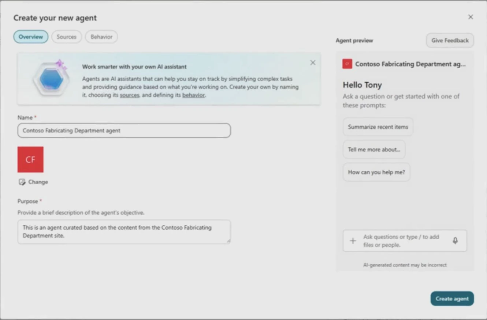
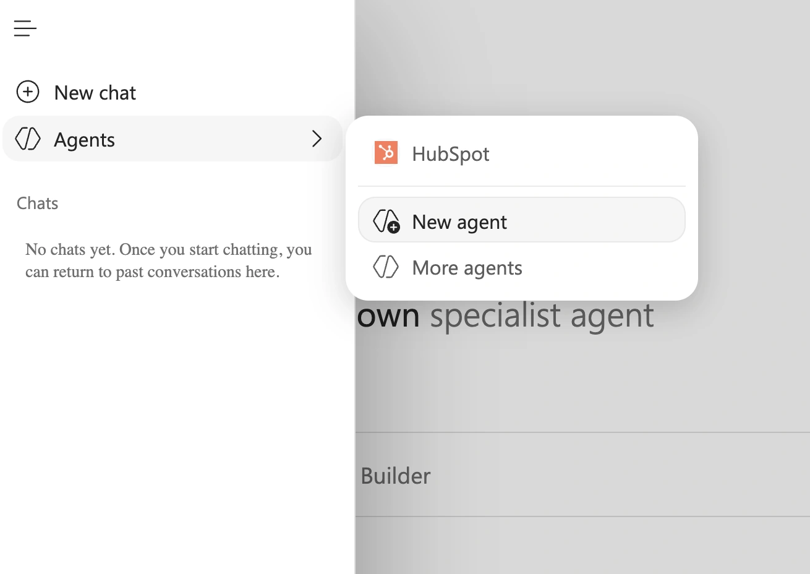
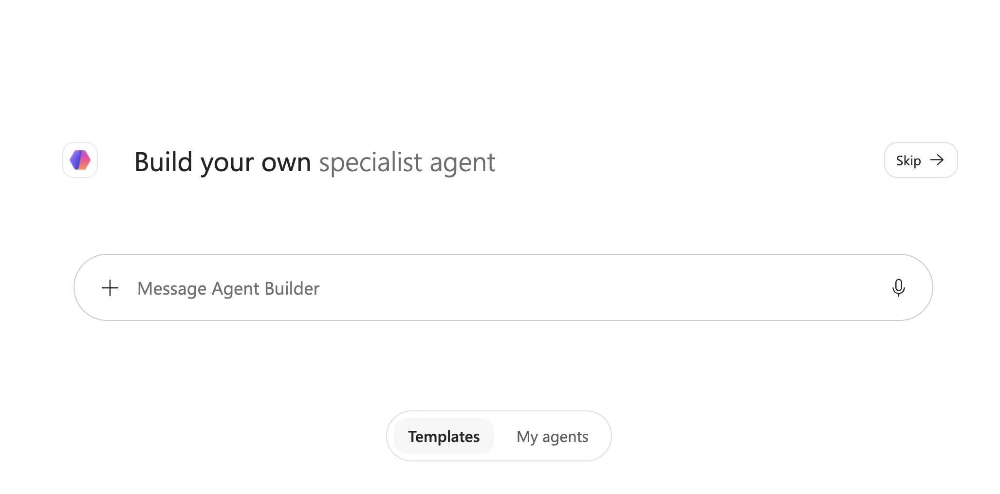
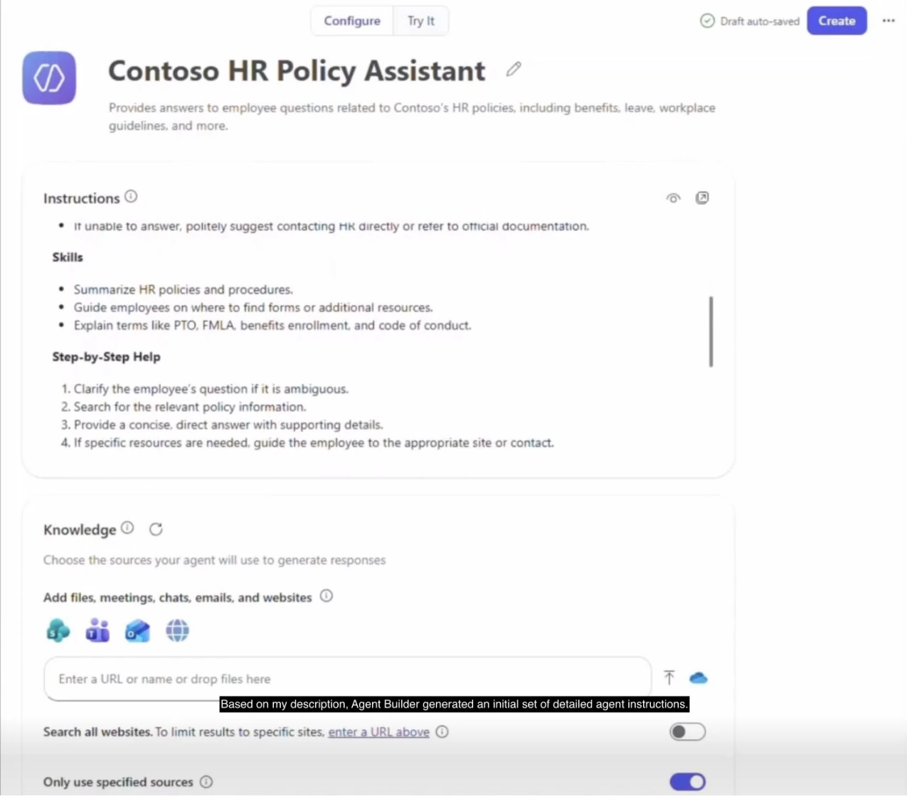
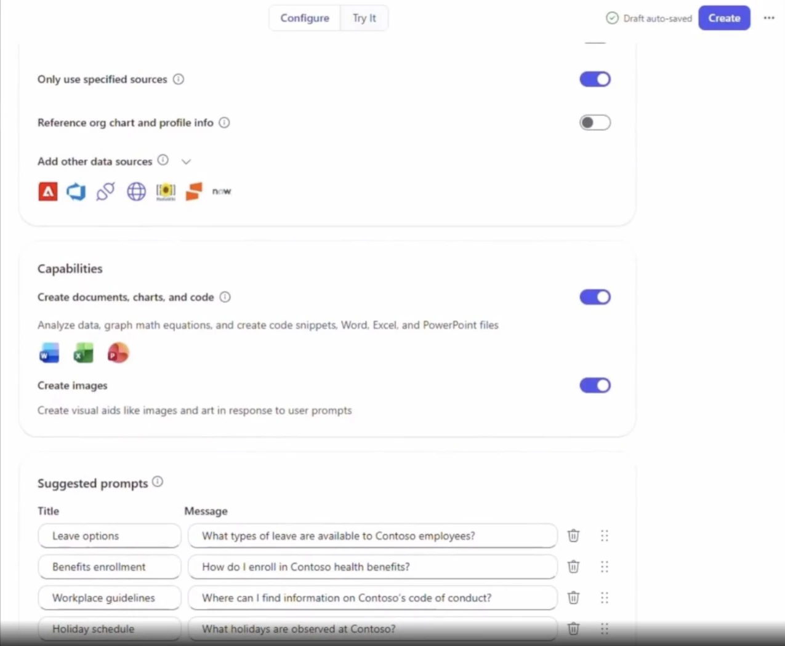
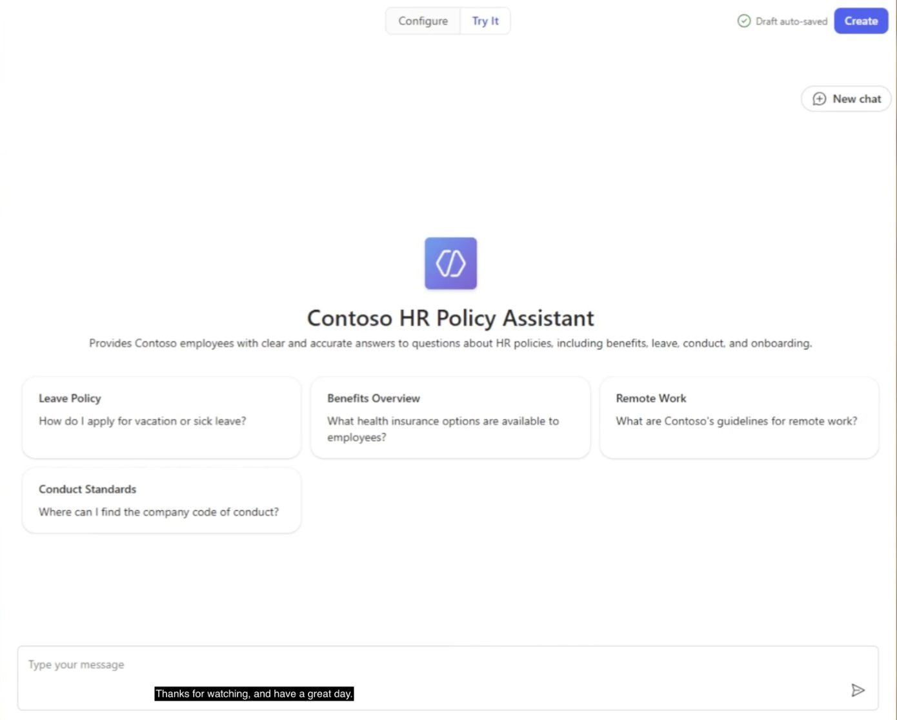

시작 전에 확인해요
회사에서 Microsoft 365를 쓰고 업무용 AI도 Copilot을 사용한다면, Copilot Chat의 Agent Builder에서 에이전트를 만들 수 있어요. 원하는 업무를 설명하면 지침 초안이 만들어지고, 참고할 자료와 답변 방식을 설정할 수 있습니다.
이미 Copilot 사용 권한이 있는 분들을 위한 노트입니다. 회사 계정으로 Copilot에 접속한 상태에서 따라가면 돼요.
아래에는 Copilot 메뉴와 에이전트 생성 시작 화면, Microsoft Learn 교육 영상에서 잘라낸 설정 화면을 함께 넣었어요. 영상에서 가져온 설정 화면은 현재 회사 계정의 메뉴나 배치와 다를 수 있습니다. 설명 탭을 쓸 수 없는 지역·언어에서는 구성 탭으로 직접 설정하면 돼요.
어떤 도구를 쓰면 될까요?
Copilot Chat의 Agent Builder는 역할, 지침, 지식 출처와 시작 질문을 설정하는 도구예요. 팀 문서를 찾아주거나 회사 정책에 관한 반복 질문에 답하는 에이전트를 만들 때 사용할 수 있습니다.
특정 SharePoint 사이트나 문서 모음에 관한 질문을 처리하려면 SharePoint 안에서 에이전트를 만드는 방법도 있어요. 기존 사이트 권한을 적용해 사용자가 접근할 수 있는 콘텐츠를 바탕으로 답합니다.

외부 시스템에 티켓을 생성하거나 조건에 따라 업무를 처리하는 기능이 필요하다면 Copilot Studio를 검토하세요. 이 글에서는 Copilot Chat 안에서 만드는 과정을 다룹니다.
1. 새 에이전트에서 시작 방법 고르기
왼쪽 위 메뉴(☰)를 열고 Agents → New agent를 선택하세요. 새 에이전트 화면에서 원하는 업무를 설명하거나, 템플릿을 고르거나, 직접 구성하는 방식으로 시작할 수 있어요.

템플릿을 선택하면 이름, 설명, 지침과 시작 질문 등이 채워집니다. 해당 내용은 수정할 수 있어요. 연결된 공식 실습에서는 만드는 과정을 익히기 위해 템플릿 없이 시작하도록 안내합니다.
2. 누구를 위해 무슨 일을 할지 설명하기

Message Agent Builder 입력창에 누가 사용할 에이전트인지, 어떤 일을 맡길지 적어주세요. HR 정책 도우미라면 이렇게 요청할 수 있어요.
직원들이 휴가, 복리후생, 원격 근무 규정을 물어볼 수 있는 HR 정책 도우미를 만들어줘. 연결한 회사 정책 문서를 바탕으로 한국어로 짧게 답하고, 참고한 문서의 링크도 알려줘. 문서에서 답을 찾을 수 없으면 HR팀에 문의하도록 안내해줘.
요청을 보내고 추가 질문이 나오면 답하면서 설정을 구체화하세요. 이후에는 Describe 탭에서 “답변을 더 짧게 해줘”, “신입 직원도 이해할 수 있게 설명해줘”처럼 변경을 요청할 수 있어요. 바뀐 내용은 Configure에서 확인하고 Preview에서 테스트하면 됩니다.
3. 자동으로 만든 지침과 참고 자료 확인하기
구성(Configure) 탭에서 이름과 설명을 확인한 뒤 Instructions를 읽어보세요. 처음 적은 설명이 어떤 규칙으로 바뀌었는지 보는 단계예요.

지침은 직접 수정하거나 Agent Builder에게 변경을 요청할 수 있습니다. 공식 실습처럼 “이 에이전트에 추가하면 좋을 지침을 추천해줘”라고 요청한 뒤, 제안을 읽고 필요한 내용을 반영해도 돼요. 반영 후에는 Instructions가 실제로 바뀌었는지 확인하세요.
Knowledge에는 업무에 필요한 SharePoint 자료, 문서, 웹사이트 등을 추가해요. HR 도우미라면 회사의 실제 HR 정책 문서를 연결해야 합니다. 사용할 수 있는 자료와 기능은 회사 설정과 계정에 따라 달라질 수 있어요.
자료를 연결하지 않아도 일반 지식으로 답할 수는 있어요. 답변이 나온다는 이유만으로 우리 회사 정책이 반영됐다고 생각하면 안 됩니다. 자료를 추가한 뒤 그 문서에서 정보를 가져오는지 테스트하세요.
4. 필요한 기능과 시작 질문 정리하기

영상에는 문서·차트·코드 생성과 이미지 생성 기능이 보입니다. 에이전트가 맡을 업무에 어떤 기능이 필요한지 확인하세요.
시작 질문은 자동 생성된 항목을 수정하거나 삭제하고 새로 추가할 수 있어요. HR 도우미라면 “휴가는 어떻게 신청하나요?”처럼 직원이 실제로 물을 질문을 넣으면 됩니다. 이것은 사용자가 누를 예시 질문이며, 에이전트의 전체 응답 규칙은 Instructions에서 관리해요.
5. 질문해보고 수정한 뒤 만들기

학습 본문과 영상은 테스트 화면을 Try it로, 연결된 실습 문서는 Preview로 표기해요. 어느 화면이든 에이전트의 응답을 확인하는 단계입니다.
정책 문서에 답이 있는 질문으로 시작하고, 문서의 내용과 답변을 비교하세요. 출처를 표시하도록 했다면 링크도 열어보세요. 답이 어긋나면 참고 자료나 지침을 고친 뒤 다시 질문합니다.
추가로 문서에 없는 내용이나 모호한 요청도 넣어보면 좋아요. 예를 들어 자료에 없는 정책을 물었을 때 추측해서 답하는지, “휴가 쓰고 싶어”라는 요청에 필요한 조건을 확인하는지 볼 수 있습니다.
설정과 응답을 확인했으면 만들기(Create)를 선택합니다. 공식 실습은 생성 완료 창에서 Start chat을 선택한 뒤 실제 대화 화면에서도 질문하도록 안내해요.
만든 뒤에는 어디서 찾나요?
공식 실습에 따르면 생성 직후 에이전트는 본인만 사용할 수 있는 비공개 상태예요. 동료가 쓰려면 별도로 공유해야 합니다. 공유 전에 에이전트와 참고 자료의 접근 권한, 회사 정책을 확인하세요.
다시 열려면 탐색 메뉴의 More agents에서 Agent Store로 이동해 Your agents를 확인하세요. 자주 쓰는 에이전트는 Pin으로 고정할 수 있습니다. 이 부분은 영상 이후의 연결된 실습 문서에서 안내하는 절차예요.
출처와 화면
- Microsoft Learn · AI 에이전트를 만들어 업무 방식 확장
- 2단원 · 에이전트를 만드는 데 사용되는 도구 살펴보기 · 약 1분 35초 영상
- 3단원 · Copilot Chat에서 에이전트 만들기 · 약 1분 31초 영상
- 공식 실습 · Create a Microsoft Copilot agent · 생성부터 Agent Store에서 다시 찾기까지 21개 절차
화면 출처: Copilot 메뉴·에이전트 생성 시작 화면 직접 캡처 및 Microsoft Learn 교육 영상. 영상은 필요한 영역을 잘라 사용하고 한국어 설명을 덧붙였어요. 한국어 요청 예시와 추가 테스트 질문은 이 노트에서 제안한 내용입니다.
확인·작성: 2026년 11월 3일 · 글: Ember